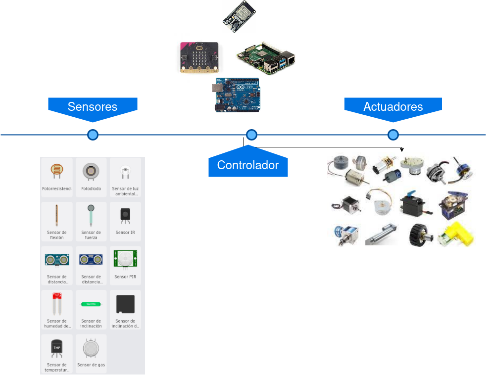

La computación física es una disciplina que permite diseñar dispositivos, objetos e incluso entornos que establecen un mecanismo de comunicación entre el mundo físico y el mundo virtual. Por ejemplo, un ordenador o una tablet relacionan el mundo físico con el mundo virtual de las máquinas y de los ordenadores. En concreto, la computación física se refiere a la construcción de dispositivos que incluyen los siguientes elementos que interactúan con el entorno:

Esta conexión es bidireccional, es decir, puede consistir en obtener información del entorno y enviarla a ordenadores para su procesado o bien al contrario, el uso de información para controlar motores, relés, luces y otros dispositivos capaces de actuar sobre el entorno.
En este vídeo se resume el funcionamiento de un sistema de computación física
Una vez que hemos entendido cómo funciona un sistema de computación física, vamos a estudiar cada uno de sus elementos